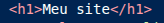
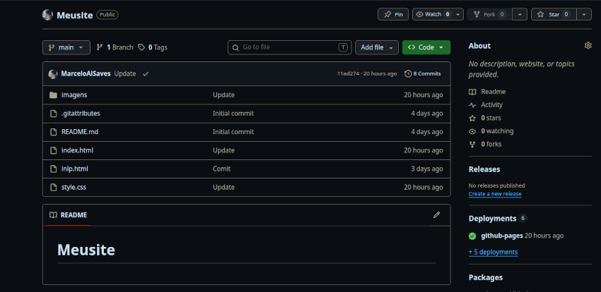

Bem-vindo ao meu site!
Olá! Meu nome é Marcelo, Tenho 14 anos e sou um jovem desenvolvedor que está aprendendo HTML e CSS. Atualmente moro em carapícuiba, São paulo.
Clique aqui para acessar as minhas atividades ja realizadas no meu repositório do GitHub
Meus objetivos desse site são criar um pequeno portfólio e compartilhar meu conhecimento sobre desenvolvimento web.
HTML e CSS são duas tecnologias fundamentais usadas para criar sites. O HTML (HyperText Markup Language) é responsável pela estrutura da página, ou seja, ele organiza os elementos como títulos, parágrafos, imagens e links. É como se fosse o esqueleto de um site, definindo o que aparece na tela.
Já o CSS (Cascading Style Sheets) é usado para estilizar a aparência do site. Ele permite que você controle as cores, fontes, espaçamento e layout dos elementos HTML. Com o CSS, você pode transformar um site simples em algo visualmente atraente e personalizado.
Um documento HTML é composto por uma estrutura básica que inclui a declaração do tipo de documento, o elemento raiz <html>, o cabeçalho <head> e o corpo <body>, para fazer uma estrutura simples pelo VScode utiliza o "!"
<!DOCTYPE html>
<html>
<head>
<title>Meu site</title>
</head>
<body>
Conteúdo aqui
</body>
</html>
Normalmente, um elemento HTML é composto por uma tag de abertura, um conteúdo e uma tag de fechamento. Por exemplo, um parágrafo é criado com a tag <p> e finalizado com </p>, envolvendo o texto que será mostrado na tela. Existem muitos tipos de elemento de HTML Dentre eles os principais são:

Os links são elementos HTML que permitem navegar entre páginas web. Eles são criados com a tag <a> e o atributo href especifica a URL para onde o link aponta.
Exemplo: Visitar o Google
As imagens são elementos HTML que permitem inserir imagens em uma página web. Elas são criadas com a tag <img> e o atributo src especifica o caminho para a imagem.
Exemplo:

Para colocar comentários no HTML, utilize a sintaxe <!-- Comentário -->. So que aparece so pelo VScode, utiliza bastante em ambientes de desenvolvimento. Para avisar algum problema, por exemplo.
HTML e essencial para criar sites. O HTML fornece a estrutura, sem o HTML, não teríamos uma maneira de organizar o conteúdo da página.
O CSS (Cascading Style Sheets) é uma linguagem de estilo usada para descrever a apresentação de um documento HTML. Ele permite controlar a aparência dos elementos HTML, como cores, fontes, espaçamento e layout. O CSS é fundamental para criar sites visualmente atraentes e personalizados.
<p {
color: blue;
}>
Existem várias formas de definir cores no CSS, incluindo nomes de cores, valores hexadecimais e valores RGB. Por exemplo, para definir a cor do texto como azul, você pode usar o nome da cor "blue", o valor hexadecimal "#0000FF" ou o valor RGB "rgb(0, 0, 255)".
<body {
background-color: lightgray;
}>
Existem várias formas de definir o fundo de um elemento no CSS, incluindo cores sólidas, imagens e gradientes. Por exemplo, para definir a cor do fundo como cinza claro, você pode usar o nome da cor "lightgray", o valor hexadecimal "#D3D3D3" ou o valor RGB "rgb(211, 211, 211)".
O CSS permite controlar as fontes usadas em um site, incluindo o tipo de fonte, o tamanho e o estilo. Por exemplo, para definir a fonte de um título como Arial, você pode usar a propriedade font-family com o valor "Arial, sans-serif".
<h1 {
font-family: Arial, sans-serif;
}>